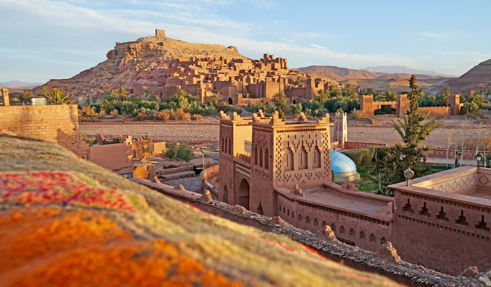
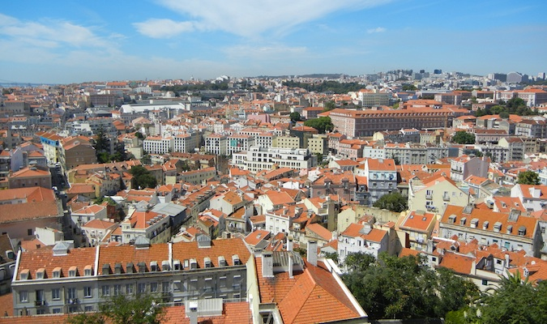

Plan your trip!
From iconic monuments to sites of social justice, the 2020 World Monuments Watch includes 25 sites that marry great historical significance with contemporary social impact.
The world is full of cheap vacation spots. And, these days, it doesn’t require much effort to find them. No matter what continent — and no matter what interests you have — there are countless places you can visit on a budget. No destination is really ever “too expensive” as long as you do some research, get creative, and have some flexibility — you just might not be living large when you visit them. Fortunately, there are a handful of destinations out there that make budget travel easy, fun, and safe. After over a decade as a frugal nomad, I’ve had the privilege of visiting dozens of budget-friendly countries that make traveling cheap as easy as it can be. These destinations offer affordable accommodation, cheap food, and plenty of activities and excursions that can be enjoyed without breaking the bank. Whether you’re a history buff, foodie, beach bum, or party animal, this list has something for you. Here’s a list of my favorite cheap places to travel right now to help you plan your next affordable adventure:
1. Cambodia:
Ancient Buddhist relics at a historic site in beautiful Cambodia While you could put all of Southeast Asia on this list, Cambodia is one of my favorite countries in the region — it’s affordable and beautiful, and the locals are incredibly hospitable. You can get a private, air-conditioned room for $25 USD, street food for $2-5 USD, and transportation across the entire country for $20-25 USD. If you are spending close to $50 USD per day, you are living large. Cambodia is cheaper than popular Thailand but just as beautiful and filled with some of the nicest people in the world. Plus, it’s home to the incredible Angkor Wat (which, while expensive to visit, is worth the expense!).
2.Bears Ears:
After over a decade as a frugal nomad, I’ve had the privilege of visiting dozens of budget-friendly countries that make traveling cheap as easy as it can be. These destinations offer affordable accommodation, cheap food, and plenty of activities and excursions that can be enjoyed without breaking the bank.
3.Morroco:
Morocco (/məˈrɒkoʊ/ (listen)),[note 3] officially the Kingdom of Morocco,[note 4] is a country in the Maghreb region of North Africa. It overlooks the Mediterranean Sea to the north and the Atlantic Ocean to the west, and has land borders with Algeria to the east, and the disputed territory of Western Sahara to the south. Mauritania lies to the south of Western Sahara. Morocco also claims the Spanish exclaves of Ceuta, Melilla and Peñón de Vélez de la Gomera, and several small Spanish-controlled islands off its coast
4.Ontario:
The thinly populated Canadian Shield, which dominates the northwestern and central portions of the province, comprises over half the land area of Ontario. Although this area mostly does not support agriculture, it is rich in minerals, partly covered by the Central and Midwestern Canadian Shield forests, and studded with lakes and rivers. Northern Ontario is subdivided into two sub-regions: Northwestern Ontario and Northeastern Ontario.
5.Portugal
One of the oldest countries in Europe, its territory has been continuously settled, invaded and fought over since prehistoric times. The territory was first inhabited by pre-Roman and Celtic peoples (at the time of the first large-scale Roman invasions in Western Iberia, they preponderantly were the Lusitanians, the Gallaecians, the Celtici and, to some extent, the Conii).